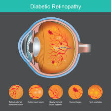
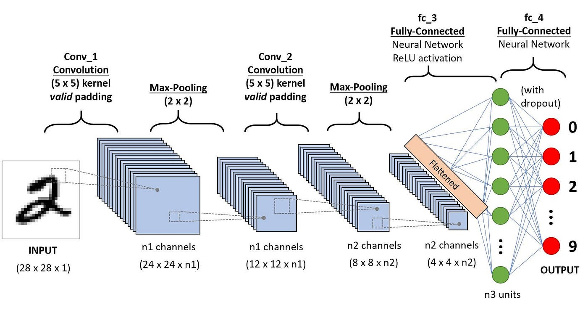
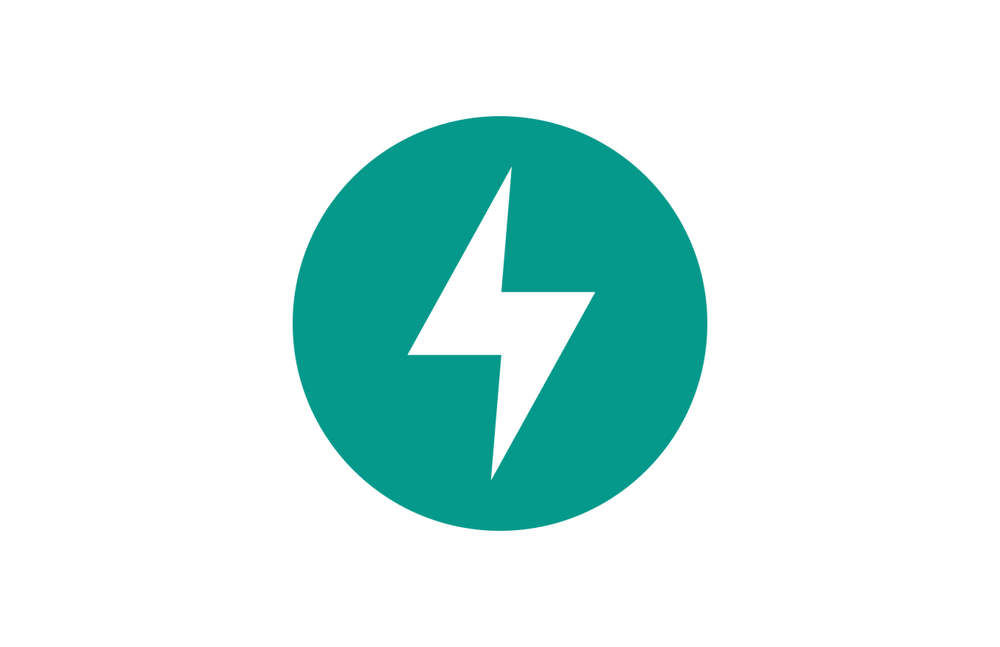
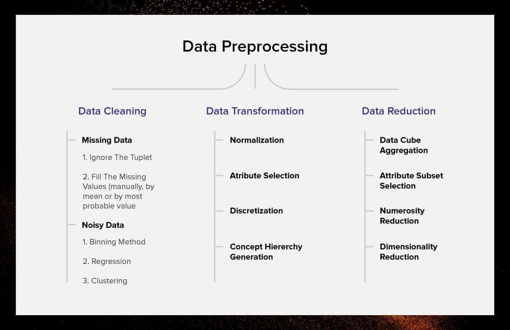
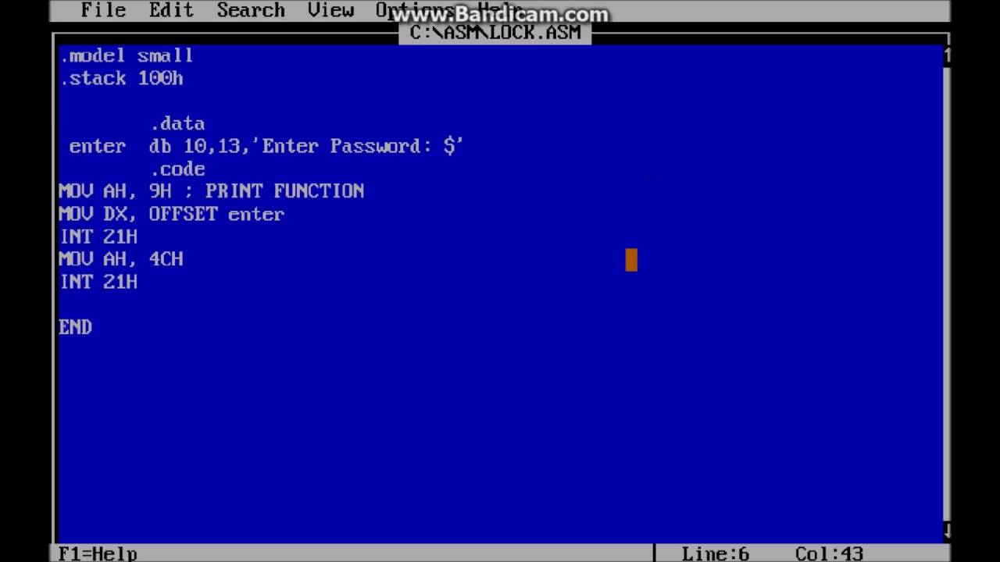
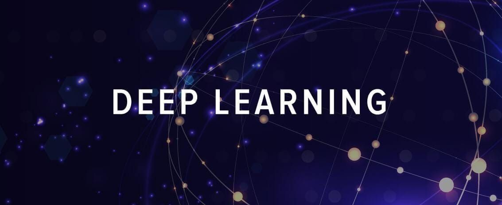

A showcase of my work in AI, Signal Processing, and Software Architecture

Award-winning hybrid model using EfficientNet and DenseNet architectures. Selected among 136 projects for national funding.
View Code
EU-funded project achieving 99% accuracy in real-time signal noise classification for 4G/5G channels.
View Code
Scalable backend architecture for AI model serving, featuring robust API documentation and high-performance endpoints.
View Code
Comprehensive toolkit for data cleaning, augmentation, and feature engineering for deep learning workflows.
View Code
Low-level implementation for rectangular object movement in DosBox environment, showcasing memory management skills.
View Code
A collection of end-to-end applications demonstrating the integration of ML models into functional software products.
View Code